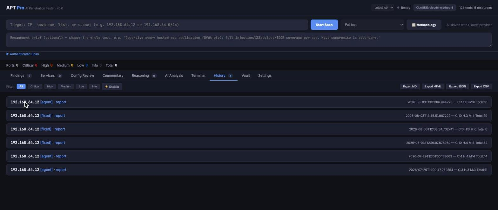
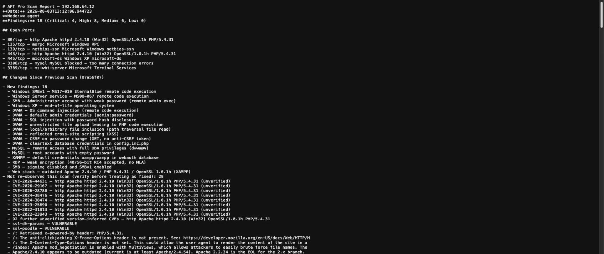

An AI penetration testing platform. The agent plans and executes the test itself — recon through to exploitation and reporting — driving the real local toolset, and every finding it records is verified with command output rather than inferred from a banner.

Every run against a host is kept, so a re-scan is a comparison rather than a fresh opinion. The rows above are successive passes at the same lab VM as things were fixed between them.
This is the whole premise. A scanner tells you a host is probably vulnerable because a version string matched; that is where most automated tooling stops, and it is why scanner output needs a human to triage it before anyone will act on it.
ReconPro's agent has to demonstrate the finding. It runs the check, reads the output, and only records a finding when it has evidence — the command and its output are attached to the finding itself. Where it can go further it does: it exploits, captures credentials, and stores them for reuse against the rest of the estate on later scans.
A FastAPI server on loopback serves a single-page operator UI. The agent drives whatever
is on PATH — nmap, nuclei, sqlmap, metasploit, enum4linux, hydra,
bloodhound-python and around 129 tools in total — and the whole run streams live into
the browser so you can watch it think and intervene.
Engagement types — infrastructure, web app, API, AD review, containers,
Kubernetes, thick client, server build reviews, firewall ruleset reviews and cloud
config reviews. Each one hands the agent a different set of scope rules defining what it
may and may not touch.
Methodology-driven — upload a methodology sheet and the agent treats it
as required coverage, reporting a status against every single item: pass, finding
raised, not applicable, or not testable with a stated reason. That last category is the
one that matters, because it is the honest answer a scanner never gives you.
Engagement briefs — free text that shapes the whole test. "Deep-dive
every hosted app, host compromise is secondary" changes what it prioritises.
Live operator chat — talk to the agent mid-scan. "That payload failed,
try an x86 template." The same session resumes afterwards for follow-up questions.
Estate scans — give it a subnet and it discovers live hosts, tests each
in turn, and writes a combined report.
Offline config review — drag in firewall rulesets, device configs,
sshd_config or cloud exports for a no-network hardening review that returns
corrected config, not just a list of complaints.
Scan-over-scan diffing — a re-scan is compared against the previous run
and split into new, unchanged, and no-longer-observed. The third one is a prompt to go
and verify a fix rather than assume it.
Reporting — a Markdown report per scan, with one-click export to styled
HTML with a cover page and severity chart, JSON and CSV. Findings carry MITRE ATT&CK
technique IDs.

This is a real report against a deliberately vulnerable lab VM, and the structure is the
argument. Eighteen verified findings at the top — each one demonstrated. Then a
separate section for what was not re-observed, explicitly labelled
verify before treating as fixed rather than silently dropped. Then, kept firmly
apart from both, the version-inferred CVEs marked unverified — ninety-two
of them collapsed into a single line, because that is roughly what they are worth
without a check behind them.
Running jobs are snapshotted to disk every fifteen seconds. If the server dies mid-run — and long agent runs give it plenty of opportunity — the jobs reappear in the selector afterwards, including the ones interrupted halfway, marked as such and still inspectable. Completed agent sessions stay resumable for follow-up chat. Losing four hours of a scan to a process restart is the kind of thing you only build against once.
Two features are built and disabled in the UI: concurrent jobs (the backend handles three in parallel, capped at one until the job selector has been properly browser-tested) and the engagement-type dropdown (greyed out until the methodology packs behind it are wired in — the CLI flag still works). Both are one-line re-enables. I'd rather ship a thing that does less and doesn't lie about it.
This does not replace a tester, and the interesting reason isn't capability — it's that an agent is extremely good at exhaustively working a checklist and quite bad at the instinct that says this parameter feels wrong, let me spend an hour on it. What it genuinely removes is the four hours of enumeration and evidence-gathering at the start of every engagement, which is the part I have never once enjoyed and the part where fatigue actually causes misses.